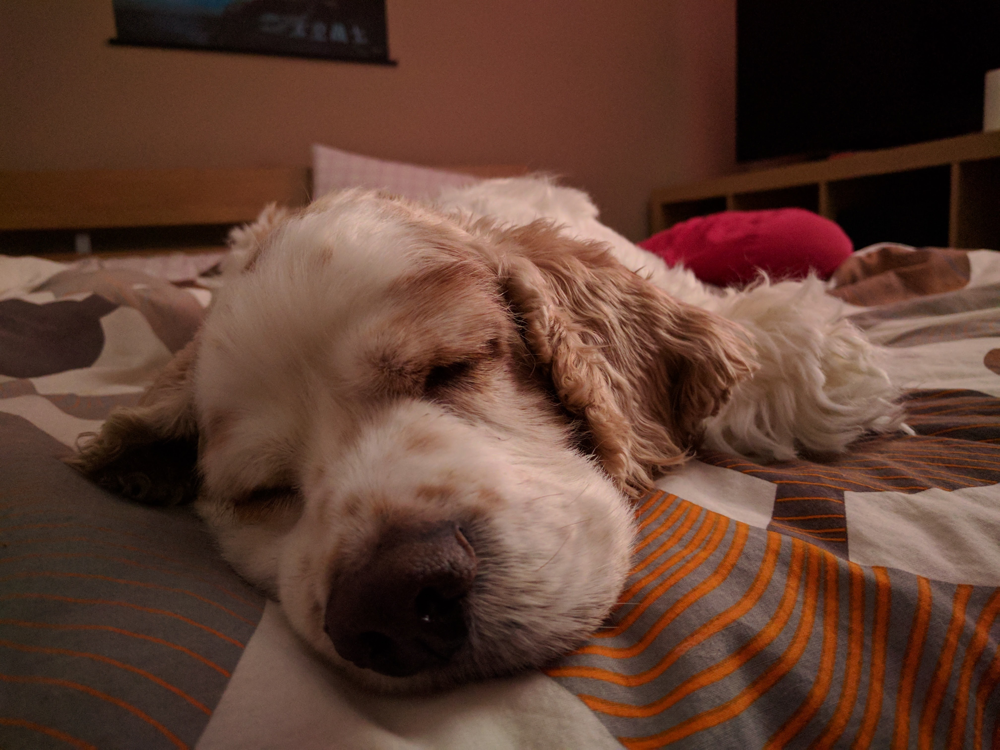

I'm currently a student at BCIT focusing on finishing the CST diploma. On average I take about 4-5 courses a semester -- after a while you really like feeling the burn. Things that keep me going in life are: food, coffee, reading a good book, and cuddling with the family dog Cash.

(And yes, I will send him cuddles for you if you ask)
Skill Level
Web development courses taken at BCIT:
Comp 1850 - Web Dev 1
Comp 2015 - Intro Javascript and jQuery
Comp 2909 - AngularJS
I have taken more programming courses like Java, C#, and C++ so I would say that most of my strength comes from there.
Comp 1850 Work
The only actual web development work that is currently posted online is all the work I did for Comp 1850. Here's a link to my old homepage. And here's a link to my final project that I completed for COMP 1850.
Tools I Like
My go-to for an easy, lightweight text editor is currently Brackets. It includes a built-in live preview of your webpage so you can see in real-time how your changes will affect your webpage.
Additionally, there are a lot of plugins that you can download for the editor to make it as robust as you like. One of my personal favourites is beautify plugin that I use liberally to make sure my indentation is always clean and easy to read.